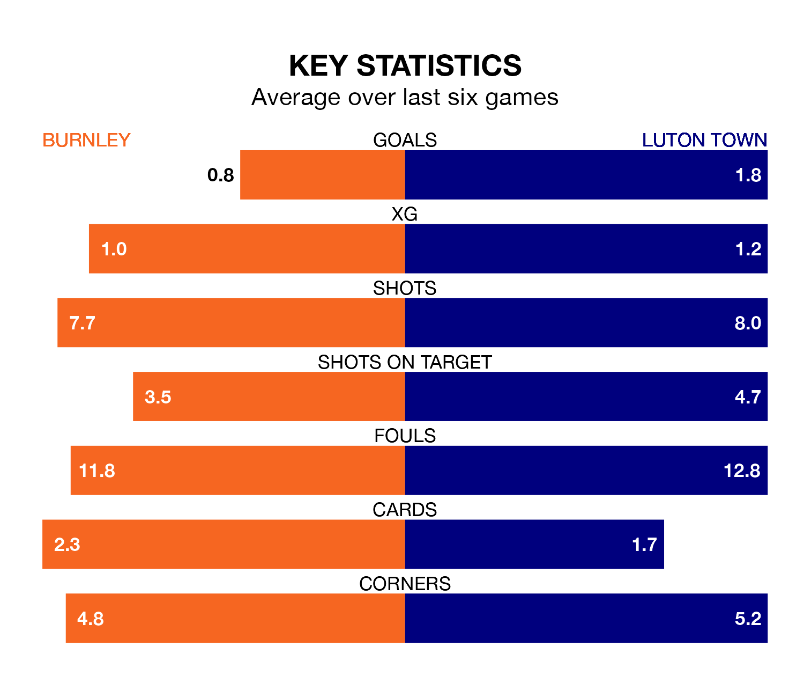

Friday's late match at Turf Moor sees two relegation candidates play each other, as 19th-ranked Burnley host 18th-placed Luton Town.
Burnley have picked up 11 points from their first 11 Premier League games, with three wins and two draws.
That is four points less than the Hatters have collected, having won four and drawn three.
Burnley are in bad form in the Premier League, with one win and a draw from their last six games.
With two wins and four losses over that period, Luton's form is slightly better – they have taken six points from 18, compared to the Clarets's four.
With 20 goals in 20 games so far this season, the home side are the league's second-lowest scorers with 1.0 goals per game. And they are conceding more than average, letting in 41 goals at a rate of 2.0 per game.
Town are also below average scorers, with 1.2 goals per game, compared to a league average of 1.6. They have conceded 1.9 goals per game.
Burnley's last match was on December 30, a 3-2 loss against Aston Villa, with Lyle Foster and Zeki Amdouni getting the goals for the Clarets.
Luton lost 3-2 against Chelsea last time out, also on December 30, with Elijah Adebayo and Ross Barkley on the scoresheet.
Updated: 15:34, 08/01/24